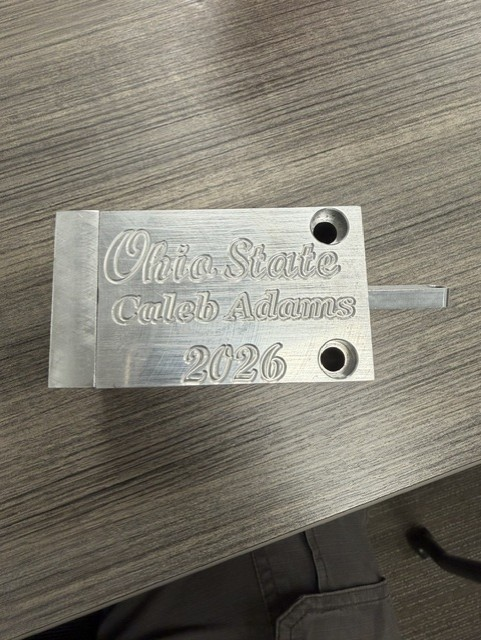
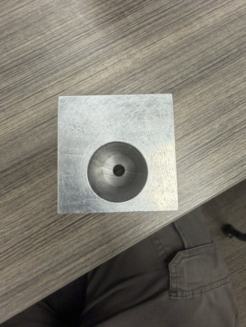
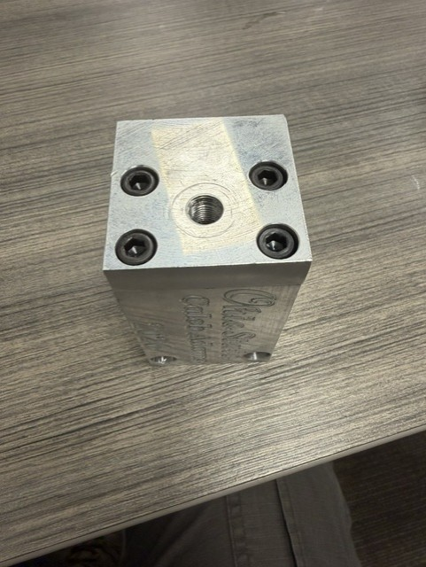
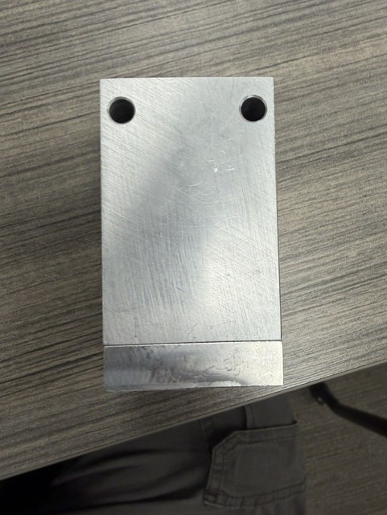
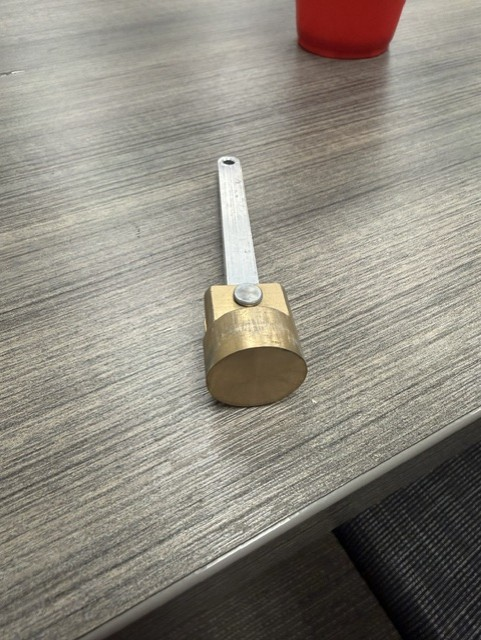
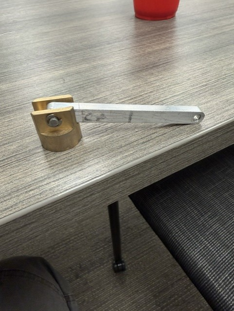
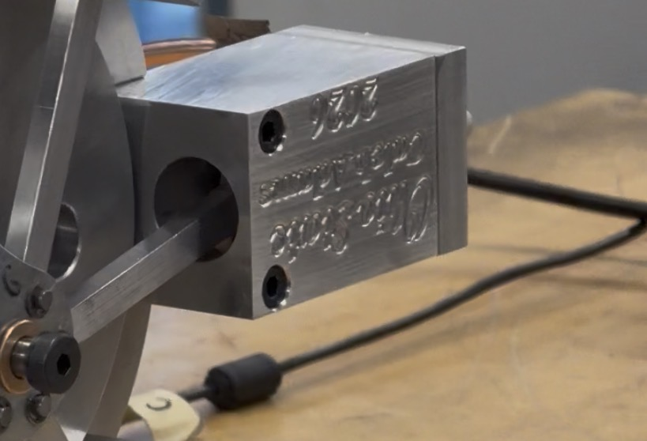

Manufactured a working aluminum-brass piston assembly using manual lathes and milling machines while maintaining a tolerance of ±0.001 in.
Used machining techniques including facing, reaming, and threading to manufacture the piston block, connecting rod, and head components.
Interpreted engineering drawings and applied dimensional analysis throughout the machining process to ensure proper fit and function.
Assembled and functionally tested the completed piston assembly, achieving smooth operation at 320 RPM.